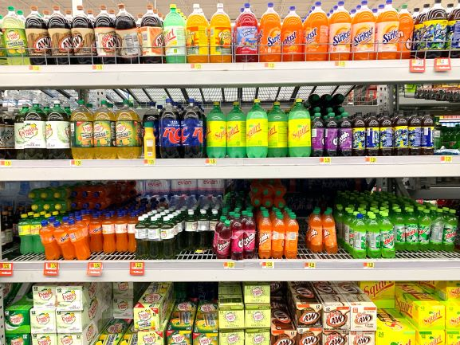
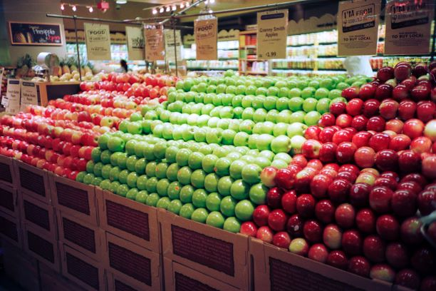
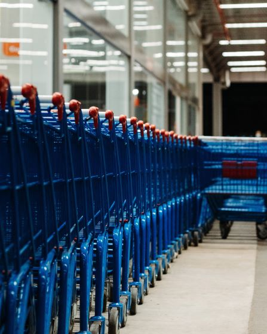

Juice is a drink made from the extraction or pressing of the natural liquid contained in fruit and vegetables. It can also refer to liquids that are flavored with concentrate or other biological food sources, such as meat or seafood, such as clam juice. At YES you have a selsction of juices to choose from.

Fruit is the sweet, fleshy, edible part of a plant. It generally contains seeds. Fruits are usually eaten raw, although some varieties can be cooked. They come in a wide variety of colours, shapes and flavours.At YES there is range of fruits that you can select from.

A shopping cart (American English) or trolley (British English), also known by a variety of other names, is a wheeled cart supplied by a shop or store, especially supermarkets, for use by customers inside the premises for transport of merchandise as they move around the premises, while shopping, prior to heading to the checkout counter, cashiers or tills.At The Mall we have lots of trolleys/carts to carter for thousands of shoppers at a time.